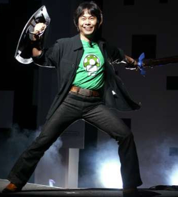

Introduction
Hello everyone, welcome to my COMP 484/L project 1 website! This website is used to demonstrate my knowledge of HTML and CSS. This website contains 4 pages, and a text document with all my sources. The professor stated that this website could be about anything we wanted so I chose a subject that I could rattle on about ad nauseum: The Legend of Zelda. If you want to see the code for my site click here or click the button at the bottom of any page.
Overview
The Legend of Zelda is a Japanese video game series created by Nintendo. It saw its first release in 1986 on the Famicom (Nintendo Entertainment System in the USA) The Legend of Zelda is the brainchild of Shigeru Miyamoto. He is also well known for creating some of the most popular video game series such as Donkey Kong, and Super Mario Bros. amongst others. Miyamoto stated that the original Legend of Zelda was inspired by his time as a child exploring the forests near his house. As an adult he wanted to portray those feelings of wonder and adventure in a videogame. The Legend of Zelda was a huge Success and still sees releases to this day. Fans are eagerly awaiting the sequel to The Legend of Zelda: Breath of the Wild scheduled to release within two years.
To give you a taste of what Zelda is and why it's so special I decided to make it the focus of my first project. I have divided the four pages into unique sections:
-
Introduction:
- A brief overview of the series and an explanation for the page. You're here now!
-
Characters:
- Brief descriptions of some of the series' main characters, recurring characters, and bad guys!
-
Lore:
- An overview of in-universe history and how characters relate to the plot.
-
Timeline:
- A collection of every main series game as well as some additional info. See how the series changed through the years!
-
Sources:
- A text file where I placed all my sources including all the sounds/pictures/video assets and the techniques I used for HTML and CSS. I made it separate as to not clutter up my other comments. If you want to see how I made this site check it out!
My Personal History with the Series
I was familiar with Zelda from a very young age, but it took time for me to really get into it. As a young child it was much too difficult for me so I would get stuck often. This led to me not finding it very much fun. Later in my adolescence, I decided it may be time to retry the series. Afterall, they did just remake a game in the series considered by many to be one of the all-time greats, Ocarina of Time. I fell in love immediately. The exploration was great; I loved traveling the wide expanses of Hyrule on horseback. Solving puzzles to reach secret areas felt so rewarding. I must have completed the game in 3 sittings; I was hooked! From that point on I went back and played most of the games in the series. To this day there is probably only two or three I have yet to finish. When I have more free time you better believe I'm gonna get to those!
The series helped introduce me to my friend group in high school. Yes, we were the kids that brought our DS's to school every day. To this day I keep up with almost every one of them. I consider one of those individuals to be my current best friend. In short, the Legend of Zelda is not just a series I enjoy just for entertainment but I also appreciate because it helped me come out of my shell and meet some great people.
Personal Ranking and Reasoning
While every game in the series are great in their own way, some entries outshine the others. This list is my personal top 10 ranking of Zelda games.
-
The Legend of Zelda
-
The Legend of Zelda: A Link to the Past
-
The Legend of Zelda: Link's Awakening
-
The Legend of Zelda: Oracle of Seasons
-
The Legend of Zelda: A Link Between Worlds
-
The Legend of Zelda: Twilight Princess
-
The Legend of Zelda: Breath of the Wild
-
The Legend of Zelda: The Wind Waker
-
The Legend of Zelda: Majora's Mask
-
The Legend of Zelda: Ocarina of Time
The Legend of Zelda while by today's standards may be a little rough around the edges is still a great game with a large world and fun combat. However, its puzzles are a little weak so its number 10.
Improves on the original is every way. Many more items, more dungeons more content. It added Link's classic spin attack, what's not to love? Well... sadly the last few dungeons are a little tedious making it number 9 on the list.
This game has all the stuff that made A Link to the Past great all from a tiny Gameboy. Every dungeon in this game is great however it is a little short, making it number 8 on the list.
Everything about the last title goes for this one as well. Including its drawbacks, however this game just did everything a little bit better that's why its number 7.
A spiritual successor to A Link to the Past, but this time, the dungeons are all good for that reason I hold this game in very high regard. Its collectables are a little tedious to gather at times so it's at slot 6.
Now we are getting into the hard hitters, Twilight Princess is simply good. The dungeon design is topnotch and the new sword techniques are super fun and flashy. For these reasons it's my 5th favorite.
Of every game on this list, this game gives you the most freedom by far. Given the sandbox nature of this title, every puzzle has near infinite solutions. The map is giant and the exploration is fantastic. The enemy variety is a little weak so it loses a few points. I am super excited to see how the sequel will improve.
Although cartoony in design, Wind Waker is anything but. This game lets you freely explore the ocean discovering new islands and locations as you sail. Not to mention that the game added in great reactionary combat mechanics, and fun characters. This one is truly one of my favorites.
This is one of the darker Zelda games. The game is divided into three-day cycles that repeat endlessly think Bill Murray in Groundhog Day. Learning each townsperson's routine and solving everyone's problems within a three-day cycle is super rewarding and the dungeons are all fantastic.
This game is frankly just perfect to me. Every dungeon is great, the story is great, the enemies are great. Link feels great to control, his combat move set feels super rigid and complete. Overall, just a fantastic game and that is why it's my favorite!